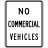
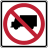
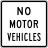
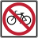
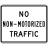
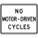
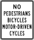
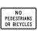
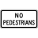
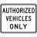

MUTCD Access Preset
Download link for Vespucci
Download link for JOSM
MUTCD access

MUTCD access

No trucks
hgv=no

No motor vehicles
motor_vehicle=no
No commercial vehicles
hgv=no
goods=no

No bicycles
bicycle=no

No non-motorized traffic
access=no
motor_vehicle=yes

No motor-driven cycles
moped=no

No ped. bicycles motor-d. c.
foot=no
bicycle=no
moped=no

No pedestrians or bicycles
foot=no
bicycle=no

No pedestrians
foot=no

Authorized vehicles only
vehicle=private